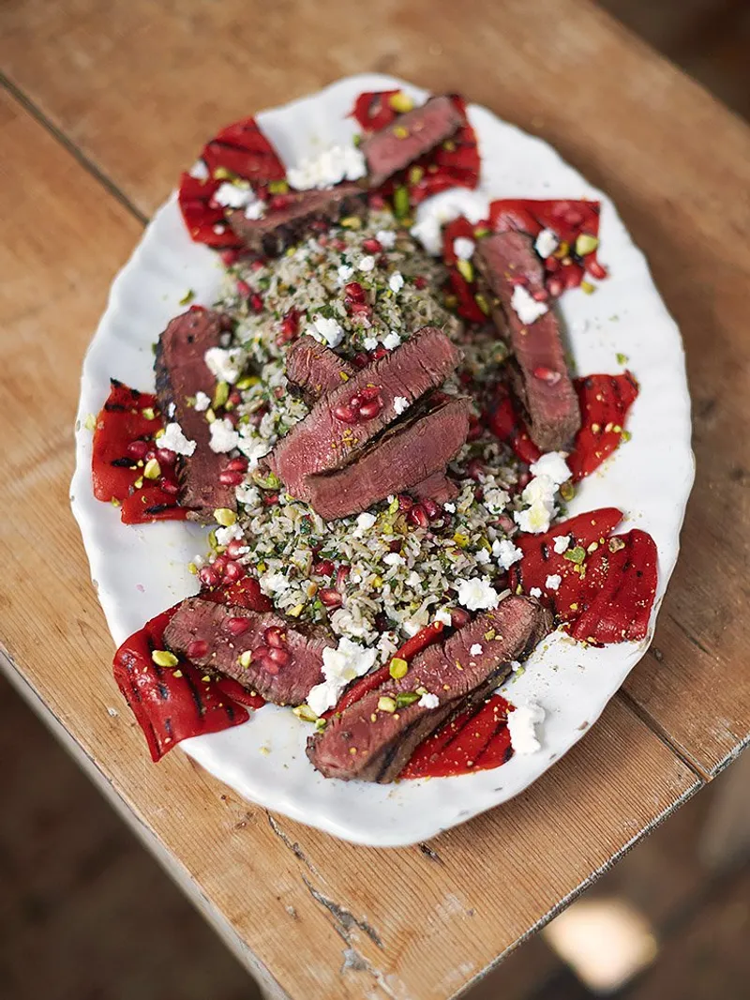

Greek Steak

Description
This recipe is inspired from the mediterranean and was seen on
Jaime Olivers television show. It has a sweet and savoury taste
which is sure to leave you satisfied.
Ingredients:
- Steak
- 1 Pomegranate
- 1/4 cup parsley
- 1/4 cup mint
- Lemon zest
- Lemon juice
- Crushed pistachios
- 1/2 yellow bell pepper
- Handful of mushroom
- 1/4 red onion
- 1 cup of rice
- Olive oil
Steps:
- Marinate steak however you like
- Cut peppers, onion and mushroom
- Put parsley, lemon zest, mint and olive oil into food processor to create a pesto
- Prepare pomegranate in bowl
- Place rice in boiling water then move off heat, leave covered
- Place steak on BBQ, 4.5 minutes per side on bottom rack, then 2.5 mins per side on top rack
- Heat pistachios in frying pan until golden, then crush and place in bowl
- When water is almost gone from rice add pesto, lemon juice and chopped vegetables, stir and leave covered
- When rice is done place on plate, lay steak on top and leave for several minutes for juices to seep into rice
- Top with pomegranates and crushed pistachios
- Enjoy!